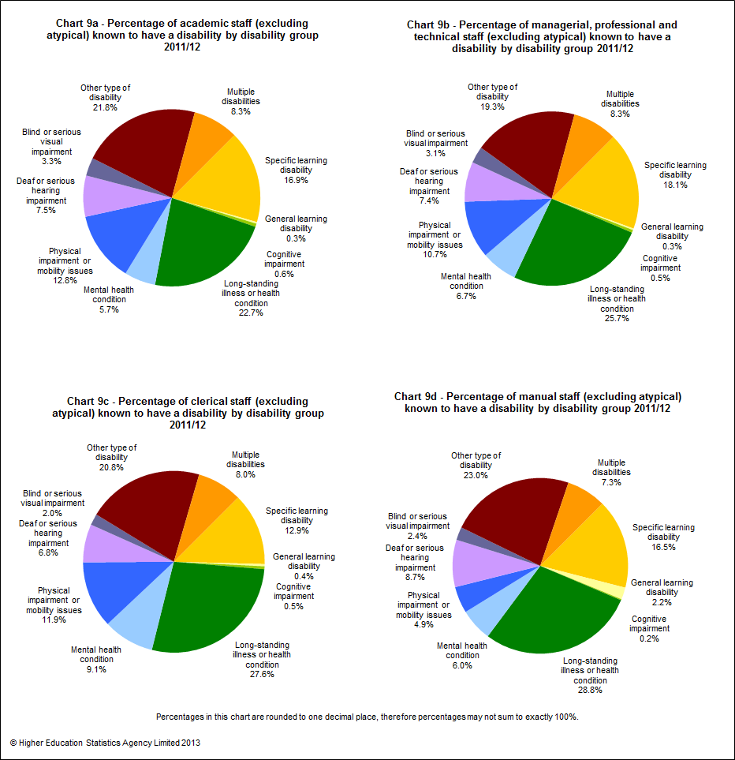

Introduction
Staff population
The HESA Staff Record covers all academic and non-academic staff who have a contract of employment with a higher education institution (HEI) in the UK, or for whom the HEI is liable to pay Class 1 National Insurance contributions. Other staff, such as those employed under consultancy contracts, or on the basis of payment of fees for services but without a contract of employment, are not included in the record.
The staff return covers data supplied by 164 HEIs; one of the English HEIs, The University of Buckingham, is a non-publicly-funded institution voluntarily providing data to HESA. The number of Welsh institutions in this publication is different from the number reported in some other HESA products because of the inclusion of staff data from The University of Wales (central functions).
In 2011/12 (that is, on 1 December 2011) there were in total, excluding atypical, 378,250 staff (381,790 in 2010/11) in the HE sector, of whom 248,125 were full-time staff (251,320 in 2010/11) and 130,125 part-time staff (130,465 in 2010/11). In addition, there were 187,865 atypical staff (183,490 in 2010/11). Throughout this introduction, unless otherwise stated, staff numbers exclude atypical staff.
All figures provided in the introduction tables and text are based on full-person equivalents (FPE; headcounts) rather than full-time equivalents (FTE; weighted by proportion relative to full-time). Where data has been disaggregated by contract characteristics, such as activity, the FPE figures have been apportioned across the contract(s) held by the staff member.
The total number of academic professionals in 2011/12 was 181,385 (181,185 in 2010/11), an increase of 0.1% between 2010/11 and 2011/12. Of the academic staff, 117,845 (65.0%) were full-time and 63,540 (35.0%) were part-time.
Academic professionals made up almost half (47.5%) of the full-time staff population. The second largest group was library assistants, clerks & general administrative assistants which made up 13.5% of the full-time staff population. Among part-time staff, 48.8% were academic professionals.
Table A shows the overall pattern of staffing in UK HEIs, including atypical staff. Chart 1 below illustrates the distribution of all full-time staff, excluding atypical, by activity (sourced from Table A).
Key for Charts 1, 2 and 3 below:
| A | Managers |
| B | Academic professionals |
| C | Non-academic professionals |
| D | Laboratory, engineering, building, IT & medical technicians (including nurses) |
| E | Student welfare workers, careers advisors, vocational training instructors, personnel & planning officers |
| F | Artistic, media, public relations, marketing & sports occupations |
| G | Library assistants, clerks & general administrative assistants |
| H | Secretaries, typists, receptionists & telephonists |
| I | Chefs, gardeners, electrical & construction trades, mechanical fitters & printers |
| J | Caretakers, residential wardens, sports & leisure attendants, nursery nurses & care occupations |
| K | Retail & customer service occupations |
| L | Drivers, maintenance supervisors & plant operatives |
| M | Cleaners, catering assistants, security officers, porters & maintenance workers |
Mode of employment and gender
Overall, females made up 53.8% of the staff population and 52.7% of the atypical staff population. Almost half (46.9%) of all full-time staff and nearly two-thirds (67.0%) of all part-time staff were female.
For academic staff, the overall proportion of females was lower at 44.5%. This was also the case for full-time and part-time academic staff of whom 39.0% and 54.9% were female.
Chart 2 below provides the gender proportions by activity of full-time staff (sourced from Table A).
Chart 3 provides equivalent data to Chart 2, but for part-time staff (sourced from Table A).
Across all activities, there were higher proportions of female part-time staff than male part-time staff, except amongst drivers, maintenance supervisors and plant operatives for which there were 47.9% females compared to 52.1% males.
Table B and Table C respectively provide a breakdown of academic and non-academic staffing in HE. Atypicals have been excluded from these tables as the majority of the data is not collected for atypical staff.
Chart 4 below provides the proportions of full-time and part-time academic staff by academic employment function (sourced from Table B).
Of the 181,385 academic staff employed by UK HEIs, 117,845, or 65.0% were in full-time employment. Most full-time staff were in teaching and research (63.7%) whereas part-time staff had a majority in teaching only (58.6%).
Salary
Among full-time academic staff, 40.7% had contract salaries between £41,639 and £55,908. For part-time academic staff, 45.2% had contract salaries between £31,020 and £41,639. It is worth clarifying here that salaries for part-time staff are not reported to HESA as pro-rata amounts but as salaries scaled up to full-time equivalent rates.
Chart 5 below illustrates the distribution of female and male full-time academic staff by salary range (sourced from Table B). Higher proportions of male full-time academic staff (26.0%) had contract salaries of £55,908 or over than female full-time academic staff (12.9%).
 by salary range 2011/12")
The total number of non-academic staff employed by UK HEIs was 196,860. Of these, 130,275 or 66.2% were in full-time employment.
Just over half, 53.4%, of full-time non-academic posts were managerial, professional and technical. Of the non-academic part-time staff, 28.0% were in managerial, professional and technical posts.
Chart 6 below provides the proportions of staff within each activity group by contract salary range (sourced from Table B and Table C). The salary ranges have been defined with reference to the nationally negotiated pay spine for non-clinical staff.
 within each activity group by salary range 2011/12")
Higher proportions of academic staff had contract salaries in the top three salary ranges than staff in the other activity groups. Similar proportions of academic staff (34.4%) and managerial, professional & technical staff (33.4%) had contract salaries between £31,020 and £41,639. Nearly two-thirds (64.0%) of manual staff had contract salaries less than £17,329. Almost half (43.7%) of clerical staff had contract salaries between £17,329 and £23,121.
Inflow/outflow of academic staff
Table D provides details of the inflow and outflow of academic staff during the year based on headcount numbers (rather than full-person equivalent headcount used in all other contexts) to give an indication of the number of staff who take up and leave academic posts at HEIs. For the purpose of this table only, full-time academic staff are those members who spend at least 50% of their time engaged in full-time academic contracts. Similarly, part-time academic staff are those members who spend at least 50% of their time engaged in part-time academic contracts.
This results in academic staff numbers that are slightly different from those given in Tables B and C. Data given in Table D also differs from that given in the main tables 20-22 which are based on staff contracts rather than headcount.
Table D involves linkage between the staff records for 2010/11 and 2011/12. Staff inflow counts the number of full-time or part-time academic staff as at 1 December 2011 who were not identified as being at a UK HEI on 1 December 2010. Staff outflow counts the number of full-time or part-time academic staff as at 1 December 2010 who were not identified as being at a UK HEI on 1 December 2011. Staff inflow and outflow numbers have been broken down by previous employment and leaving destination respectively. High proportions of unknowns, particularly amongst the leaving destination, mean that caution must be exercised when analysing this data.
The (headcount) number of full-time academic staff has decreased from 118,420 to 118,125 during the year, a decrease of 0.2%. The number of part-time academic staff increased from 64,025 to 64,550 (0.8%) during the year.
The inflow of staff into full-time academic posts was lower (5,200 staff; 4.4%) than the inflow into part-time academic posts (7,680 staff; 11.9%). The outflow of staff from full-time academic posts was higher (6,780 staff; 5.7%) than the inflow. This was not the case for part-time staff for which the outflow was lower (6,260 staff; 9.8%) than the inflow.
Age of academic staff
Table E presents the age distribution of full-time academic staff by salary range.
Of those staff whose age was known, 42.2% were aged over 45 and 12.8% were aged between 51 and 55.
The average age of full-time academic staff was 43.2 and of part-time staff, 45.4 (sourced from Table 3a). The average age of atypical academic staff was 40.6 (sourced from Table 3b).
Chart 7 provides the proportions of full-time academic staff by contract salary and age (sourced from Table E).
In the 25 and under age group, 72.9% of full-time academic staff earned a contract salary between £23,121 and £31,020 whereas the majority (61.7%) of the 31–35 age group earned a salary between £31,020 and £41,639. In the 46–50 age group, the majority (53.5%) of full-time academic staff earned a salary between £41,639 and £55,908. In the top two age groups, 61–65 years and 66 years & over, 54.1% and 65.8% respectively earned a contract salary of £55,908 or more.
Ethnicity of all staff
In Table F ethnicity is shown broken down by activity group and mode of employment. The ethnicity data within this introduction refers to staff of all nationalities.
Of all full-time and part-time staff, 93.3% reported their ethnicity. The response rate did not vary greatly by activity group and mode of employment. Among staff of known ethnicity, the proportion from ethnic minority groups varied, with greater representation among academic staff at 12.6% than among non-academic staff at 10.0%.
Ethnicity was reported for over two-thirds (70.8%) of atypical staff (69.2% in 2010/11). Of those atypical staff of known ethnicity, 18.4% were from ethnic minority groups.
Table G provides the ethnic breakdown of ethnic minority staff by activity group for all staff, including atypical. The chart 8 series below illustrate the data from Table G in pie chart format for all staff, excluding atypical.
Disability of all staff
Table H presents information on disability by activity group and mode of employment for all staff, in a similar style to Table F.
Disability status was reported for 91.5% of all staff. Of those of known disability status, 3.7% declared a disability. For academic staff, the percentages were 91.3% reported and 3.2% declared disabled. For atypical staff the percentages were 85.5% reported and 2.3% declared disabled.
Table I provides a disability breakdown, based on the staff members’ own assessment, by activity group. The chart 9 series below illustrate the data from Table I in pie chart format.
Funding, professorial status, and gender of full-time academic staff
Table J provides data on full-time academic staff by clinical status, professorial role, gender and source of basic salary. Of all full-time academic posts, 71.6% were wholly financed by the institutions themselves.
The proportion of women among full-time clinical academic staff professors was 16.4% and among non-clinical academic staff professors was 20.7%. Of those staff who were not professors, 44.5% of full-time clinical academic staff were female and 41.7% of non-clinical academic staff were female.
47.4% of full-time clinical academic staff were wholly institutionally financed compared with 73.0% of non-clinical full-time academic staff. This reflects the greater prevalence of joint funding arrangements for clinical staff such as joint contracts involving the NHS.
Of all full-time clinical academic staff, 22.5% were professors compared with 13.0% of non-clinical full-time academic staff.
Cost centre distribution of full-time academic staff
The data in Table K provides a breakdown of full-time academic staff by cost centre group, source of basic salary and gender.
Overall, 28.4% of full-time academic staff were not wholly institutionally financed. Just under half (45.1%) of full-time academic staff in medicine, dentistry & health and 44.3% in biological, mathematical & physical sciences were not wholly institutionally financed. Cost centre groups with the lowest percentage of partially or wholly externally funded full-time academic staff were in the areas of design, creative & performing arts 3.1% and education 6.1%.
Chart 10 below provides the gender proportions by cost centre of full-time staff (sourced from Table K). Over a third (36.4%) of female full-time academic staff were employed within medicine, dentistry & health cost centre compared to around a fifth (20.8%) of males. In contrast, over three times the proportion of males (18.7%) than females (6.1%) were employed in the engineering & technology cost centre.
Pattern of employment of academic staff
Table L shows academic staff by academic employment function, gender, mode of employment and terms of employment.
Among staff who only had teaching responsibilities, the majority of full-time staff were on open-ended/permanent contracts, 78.8% female and 81.3% male, whereas the majority of part-time staff were on fixed-term contracts, 68.4% female and 71.1% male. Of the staff with teaching and research responsibilities, more than 93.5% of full-time staff were on open ended/permanent staff contracts. The opposite was true of research only staff, who had a high proportion of fixed-term contracts in both full-time, 69.3% female and 68.4% male, and in part-time, 62.4% female and 72.7% male.
Chart 11 below illustrates the proportions of open-ended/permanent and fixed-term contract academic staff by mode of employment and gender.
© Higher Education Statistics Agency Limited 2013